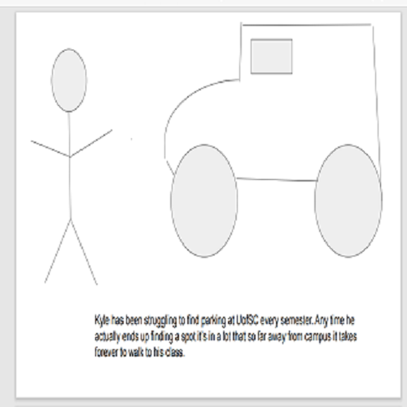
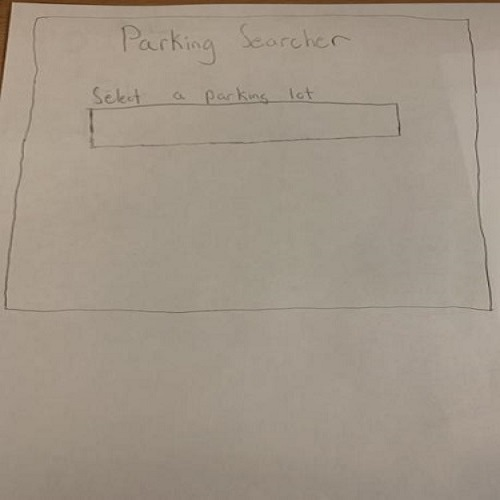
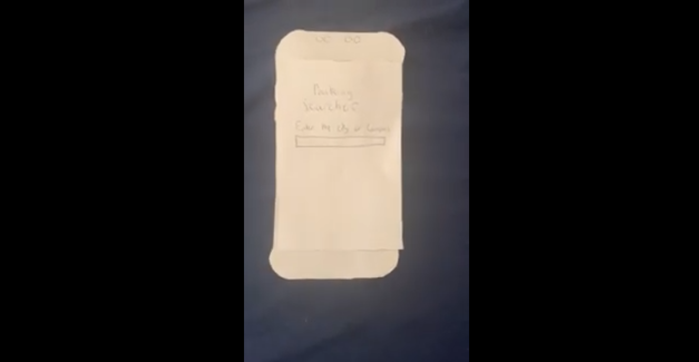
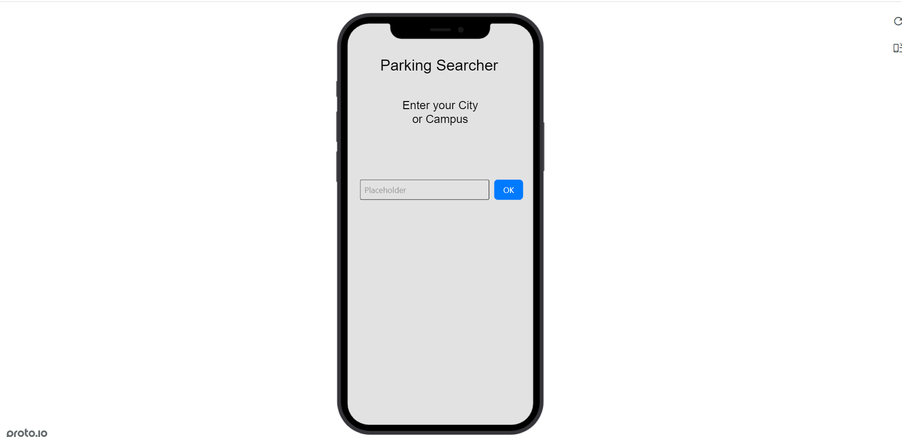

Problem Statement: UofSC Parking Finder

Students at UofSC need a way to find a parking spot even if they have a parking pass because they don’t have the time to waste going through a parking lot just to not have a spot.
Affinity Diagram: UofSC Parking Finder
My group and I brainstormed ways to find an efficient and productive way to solve our Parking Finder app.
Personna: 4 personnas for parking finder app user

Personnas of a typical parking finder app user.
Storyboard: 4 storyboards of people using the parking finder app
Storyboards for the people that uses parking finder app.
Sketches
What the app would typically look like.
Paper Prototype
A paper walkthrough of the Parking Searcher app.
Hi-Fi Prototype
A Hi-Fi prototype of the Parking Searcher app.